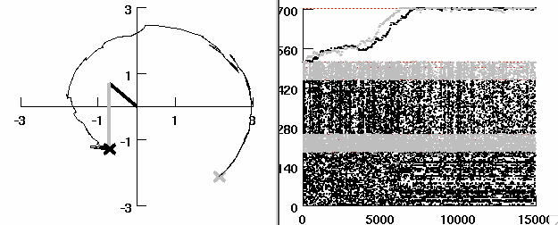

This simulation was used in an article in press at Neural Computation
Citation: Neymotin SA, Chadderdon GL, Kerr CC, Francis JT, Lytton WW
(2013). Reinforcement learning of 2-joint virtual arm reaching in a
computer model of sensorimotor cortex.
This simulation was tested/developed on LINUX systems, test on Mac OS,
but doesn't run yet on Microsoft Windows.
To run, you will need the NEURON simulator (available at
http://www.neuron.yale.edu)
Unzip the contents of zip file to a new directory.
Compile the mod files from the command line with (Linux):
nrnivmodl
This will produce an architecture-dependent folder with a script
called special. On 64 bit systems the folder is x86_64. To run the
simulation from the command line:
nrniv
then NEURON will start and load the mechanisms (cell types, etc.)
then from the NEURON prompt:
load_file("mosinit.hoc")
That will load the simulation and all required files. Network and
inputs will be setup. A graphical user interface will be displayed
with the option to run either the trained network or a naive network.
The middle panel will display the motion of the virtual arm, as
controlled by the network. After the simulation is complete, the
trajectory will be drawn in the middle panel (similar to Figure 6A)
and the arm will be positioned over the target (black 'x'). The right
panel will display a raster plot (similar to Figure 3A or B).
The trained network run should look like this:

For questions/comments on the simulation contact:
Sam Neymotin (email: samn at neurosim dot downstate dot edu)
20130628 A values.h include statement in misc.h was commented out so
that the simulation would run on Mac OS X.
20160921 Includes updates from the Lytton lab that allow the model to
run on mac OS X.
20220517 Edited infot,mod, intf_6.mod and misc.h to support NEURON
versions <8.1.0, 8.2.0 and 9.0.0.